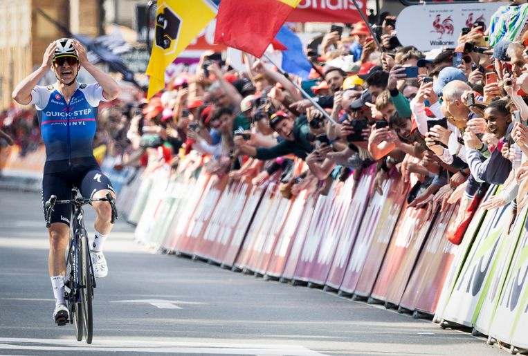

Remco Evenepoel
Meer info over Remco Evenepoel
Hier zie je Remco Evenepoel die Luik-Bastenaken-Luik wint. Remco zijn ploeg Quick Step-Alpha Vinyl kwam met 2 kopmannen Remco en wereldkampioen Alaphilippe. Alaphilippe was betrokken met een zware valpartij en viel in de gracht het verdicht was een gebroken schouderblad, een klaplong en twee gebroken ribben. Alle druk kwam op de schouders van Evenepoel te liggen. De jonge belg viel aan net voor de top van la Redoute niemand sprong mee. Evenepoel ging alleen op pad met alleen nog de Roche aux Faucons op het parcours. Wat de favorieten ook probeerden op de Roche aux Faucons. Remco bleef voorop en won.
palmares
Donostia San Sebastian Klasikoa | 2022-07-30
National Championships Belgium | ITT 2022-06-23
Tour de Suisse | Stage 8 (ITT) 2022-06-19
Tour of Norway | 2022-05-29
Tour of Norway | Stage 5 2022-05-28
Tour of Norway | Stage 3 2022-05-26
Tour of Norway | Stage 1 2022-05-24
Liège-Bastogne-Liège | 2022-04-24
Volta ao Algarve em Bicicleta | 2022-02-20
Volta ao Algarve em Bicicleta | Stage 4 (ITT) 2022-02-19
Volta a la Comunitat Valenciana | Stage 1 2022-02-02
Coppa Bernocchi | 2021-10-04
Brussels Cycling Classic | 2021-08-28
Druivenkoers - Overijse | 2021-08-26
PostNord Danmark Rundt - Tour of Denmark |2021-08-14
PostNord Danmark Rundt - Tour of Denmark | Stage 5 (ITT) 2021-08-14
PostNord Danmark Rundt - Tour of Denmark | Stage 3 2021-08-12
Baloise Belgium Tour | 2021-06-13
Baloise Belgium Tour | Stage 2 (ITT) 2021-06-10
Tour de Pologne | 2020-08-09
Tour de Pologne | Stage 4 2020-08-08
Vuelta a Burgos | 2020-08-01
Vuelta a Burgos | Stage 3 2020-07-30
Volta ao Algarve em Bicicleta | 2020-02-23
Volta ao Algarve em Bicicleta | Stage 5 (ITT) 2020-02-23
Volta ao Algarve em Bicicleta | Stage 2 2020-02-20
Vuelta a San Juan Internacional | 2020-02-02
Vuelta a San Juan Internacional | Stage 3 (ITT) 2020-01-28
European Continental Championships | ITT 2019-08-08
Clásica Ciclista San Sebastián | 2019-08-03
Adriatica Ionica Race - Sulle Rotte della Serenissima | Stage 3 2019-07-27
Baloise Belgium Tour | 2019-06-16
Baloise Belgium Tour | Stage 2 2019-06-13